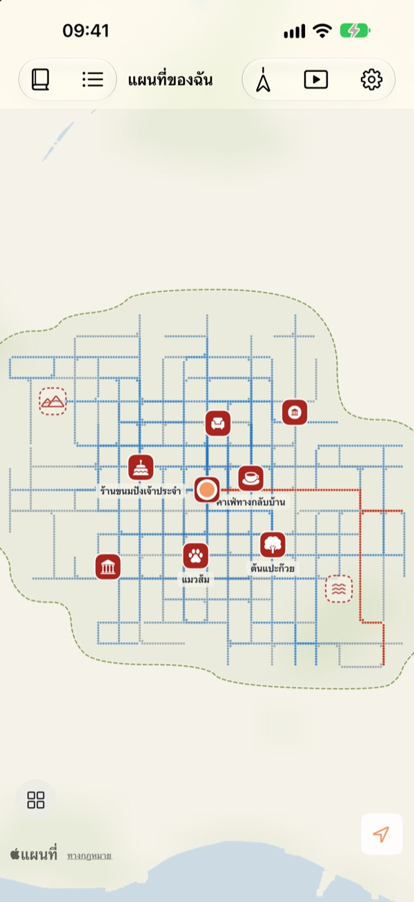
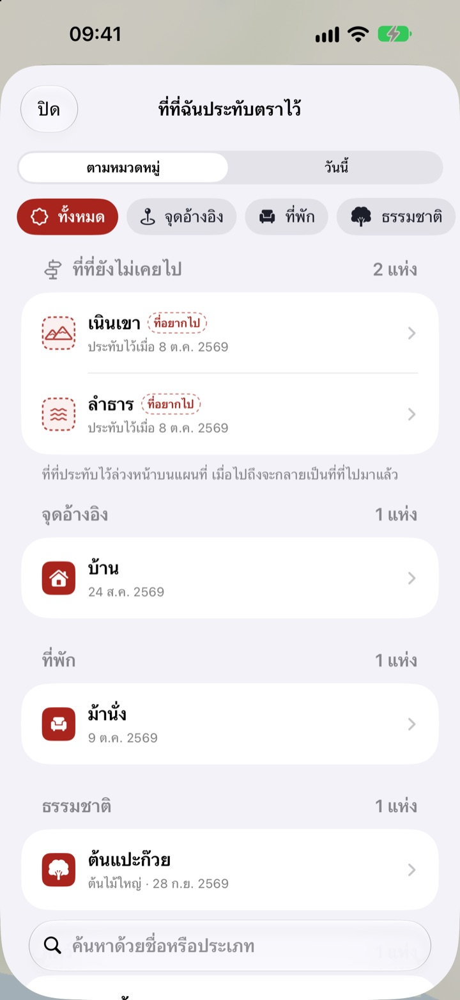
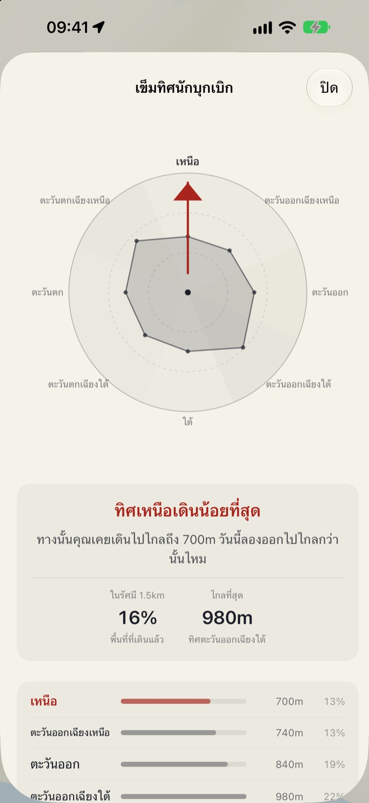
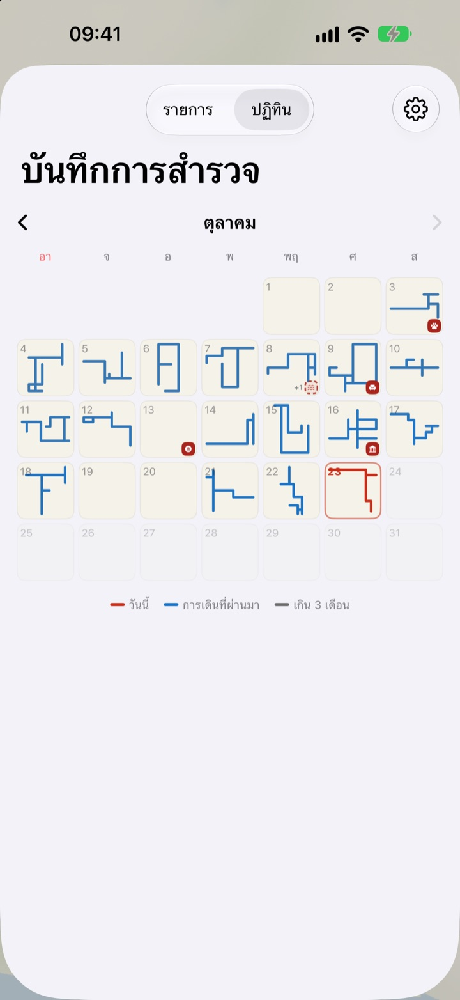

แผนที่ที่เติม
ด้วยสองเท้าเท่านั้น
เริ่มจากกระดาษเปล่าหนึ่งแผ่น เฉพาะที่ที่คุณเดินผ่านจะถูกเติมทีละจุด และต่อให้เดินถนนเดิมร้อยครั้ง แผนที่ก็ไม่กว้างขึ้น ถ้าอยากให้แผนที่กว้างขึ้น ต้องลองทางใหม่
ทุกฟีเจอร์ฟรี ไม่มีโฆษณา

ลองเดินดู
ลากนิ้วหรือเมาส์บนกระดาษเพื่อเดิน จุดสีน้ำเงินคือถนนที่เคยเดินไปแล้ว ลองดูว่า “เส้นทางที่ขีดวันนี้” เปลี่ยนไปอย่างไรเมื่อเดินซ้ำทางเดิม กับเมื่อเดินไปทางใหม่
เดินถนนเดิมทุกวันอยู่หรือเปล่า
ตัวนับก้าวนับจำนวนก้าว แต่ไม่เคยสนใจว่าก้าวไปที่ไหน แค่เดินจากบ้านไปสถานีแล้วกลับ วงก็เต็มแล้ว ส่วนซอยข้างบ้านก็ยังเป็นปริศนาไปอีกหลายปี Buktu Buktu นับเฉพาะเส้นทางที่คุณเดินเป็นครั้งแรก วันนี้จึงมีเหตุผลให้เดินอ้อมออกไปอีกสักช่วงตึก
ประทับตราที่ที่ไปมาแล้วและที่อยากไป
ประทับตราตรงที่ยืนอยู่ หรือกดค้างตรงไหนก็ได้บนแผนที่ มีตราประทับให้เลือก 212 แบบ แยกตามหมวดหมู่
ตราที่ประทับในที่ที่ไม่เคยเดินจะเป็นที่อยากไป และเมื่อไปถึงจริงก็จะกลายเป็นที่ที่ไปมาแล้ว ถ่ายป้ายหน้าร้าน แล้วพื้นหลังจะถูกตัดออก ป้ายจะตั้งขึ้นเป็นสติกเกอร์ของที่นั้น

เดินครั้งหน้า ไปทางที่เดินน้อยที่สุด
เข็มทิศนักบุกเบิกแบ่งบริเวณรอบตัวคุณเป็นแปดทิศ แล้วชี้ไปยังทิศที่คุณเดินน้อยที่สุด
รอยเท้าวันนี้เรียงที่ที่คุณแวะวันนี้ตามลำดับ พร้อมระยะที่เดินระหว่างแต่ละที่

ทุกวันทิ้งรูปร่างไว้
ปฏิทินวาดรูปร่างของการเดินแต่ละวันแทนตัวเลข เขียนไดอารี่ทุกวันด้วยข้อความและรูปภาพ และดูได้ว่าการเดินแต่ละครั้งเป็นทางใหม่มากแค่ไหน
เลือกช่วงเวลาเพื่อดูแผนที่ของคุณถูกวาดขึ้นเป็นวิดีโอ แล้วส่งออกได้

เริ่มได้ใน 3 ขั้นตอน
- 1
เปิดแอป
กระดาษเปล่าแผ่นหนึ่งจะคลี่ออก
- 2
อนุญาตตำแหน่งที่ตั้ง
เลือก “อนุญาตเสมอ” และเปิด การเคลื่อนไหวและฟิตเนส เพื่อบันทึกการเดินโดยไม่ต้องเปิดแอป
- 3
ออกไปเดิน
ยิ่งเป็นถนนที่ไม่คุ้นเคย แผนที่ก็ยิ่งกว้างขึ้น
วิธีอ่านแผนที่
- จุดสีแดง
- ที่ที่เดินวันนี้
- จุดสีคราม
- การเดินที่ผ่านมา ยิ่งผ่านบ่อยยิ่งเข้ม
- จุดสีเทา
- ที่ที่ไม่ได้กลับไปเกินสามเดือน สีจะซีดลงแต่ไม่หายไป
- ตราประทับเส้นประ
- ที่อยากไป เมื่อไปถึงจะกลายเป็นที่ที่ไปมาแล้ว
- เส้นทางที่ฉันวาด
- ความยาวรวมของทุกเส้นทางที่เดินเป็นครั้งแรก
- เส้นทางที่ขีดวันนี้
- ส่วนของการเดินวันนี้ที่เป็นทางใหม่
- ดูรวม
- ในการตั้งค่า ใช้เปิดเข็มทิศนักบุกเบิก รอยเท้าวันนี้ และฟิล์มการวาดแผนที่
เลือกได้ระหว่างแผนที่หมึกกับแผนที่ภาพวาด
ทุกฟีเจอร์ฟรี
ฟรี
- แผนที่ที่เติมเฉพาะที่ที่เดิน พร้อมติดตามทางใหม่
- ตราประทับ 212 แบบ และสติกเกอร์ป้ายร้าน
- เข็มทิศนักบุกเบิก และรอยเท้าวันนี้
- ปฏิทิน และไดอารี่ด้วยข้อความและรูปภาพ
- ส่งออกวิดีโอการวาดแผนที่
- วิดเจ็ตบนหน้าจอโฮมและหน้าจอล็อค
- ซิงค์ข้ามอุปกรณ์ด้วย iCloud
สนับสนุนนักพัฒนา
- ส่งทิปเล็กๆ ได้จากการตั้งค่า หากต้องการ
- ทิปไม่ได้ปลดล็อกอะไร แอปเหมือนเดิมทุกอย่าง
ไม่มีโฆษณา ไม่มีการสมัครสมาชิก
คำถาม
เดินแล้ว แต่ไม่มีอะไรขึ้นบนแผนที่
ไปที่ การตั้งค่า > Buktu Buktu > ตำแหน่งที่ตั้ง แล้วเลือก “เสมอ” จากนั้นเปิด การเคลื่อนไหวและฟิตเนส แอปจะบันทึกได้แม้ปิดอยู่ หากเลือกวิธีบันทึกแบบประหยัดแบตเตอรี่ในการตั้งค่าของแอป ให้เปิดแอปก่อนออกเดิน ตำแหน่งที่มีความแม่นยำต่ำจะถูกบันทึกไว้แต่ไม่วาดบนแผนที่
การเดินทางด้วยรถหรือรถไฟใต้ดินถูกบันทึกไหม
ไม่ แอปใช้ข้อมูลการเคลื่อนไหวและความเร็วเพื่อวาดเฉพาะการเดินและการวิ่ง และตัดช่วงที่ดูเหมือนอยู่บนยานพาหนะออก บางครั้งอาจตัดสินผิดได้
เดินเส้นทางเดิมทุกวัน แต่แผนที่ไม่กว้างขึ้น
นั่นคือกฎ ที่ที่อยู่ห่างจากที่ที่เคยเดินไม่เกิน 30 m ถือเป็นทางเดิม จึงมีเพียงเส้นทางที่เดินครั้งแรกเท่านั้นที่เพิ่มเข้าไปใน “เส้นทางที่ฉันวาด” ทางเท้าฝั่งตรงข้ามก็นับเป็นทางเดิมเช่นกัน เข็มทิศนักบุกเบิกจะบอกว่าทิศไหนเดินน้อยที่สุด
ตำแหน่งของฉันถูกส่งไปที่ไหนไหม
ไม่ถูกส่งให้นักพัฒนา การเดิน ตราประทับ ไดอารี่ และรูปภาพของคุณอยู่ในอุปกรณ์และใน iCloud ส่วนตัวของคุณ นักพัฒนามองไม่เห็น สถิติการใช้งานแบบไม่ระบุตัวตนไม่มีพิกัด ข้อความไดอารี่ ชื่อสถานที่ หรือรูปภาพ แอปใช้บริการแผนที่ของ Apple เพื่อแปลงพิกัดเป็นชื่อสถานที่ ดูรายละเอียดได้ที่นโยบายความเป็นส่วนตัวด้านล่าง
บันทึกจะย้ายไปเครื่องใหม่ไหม
ได้ ลงชื่อเข้าด้วยบัญชี Apple เดียวกันบนเครื่องใหม่และเปิด iCloud ไว้ การเดิน ตราประทับ ไดอารี่ และรูปภาพก็จะตามไปด้วย
ลบตราประทับหรือรูปภาพอย่างไร
ลบตราประทับได้จากรายการ “ที่ที่ฉันประทับตราไว้” ส่วนรูปในไดอารี่ ให้แตะค้างไว้เพื่อลบ วิธีลบเส้นทางและไดอารี่ทั้งหมดในครั้งเดียวอยู่ในแผนงานแล้ว
เพิ่มวิดเจ็ตอย่างไร
แตะหน้าจอโฮมค้างไว้ แตะ “แก้ไข” > “เพิ่มวิดเจ็ต” แล้วเลือก Buktu Buktu สำหรับหน้าจอล็อค ให้แตะค้างไว้ แล้วแตะ “กำหนดเอง” วิดเจ็ตบนหน้าจอโฮมแสดงรูปร่างและความยาวของเส้นทางวันนี้ ส่วนหน้าจอล็อคแสดงระยะทางวันนี้
ต้องใช้อะไรบ้าง
iPhone ที่ใช้ iOS 17.0 ขึ้นไป
ติดต่อได้อย่างไร
ส่งความคิดเห็นจากการตั้งค่าของแอป หรือส่งอีเมลมาที่ที่อยู่ด้านล่าง เราจะตอบกลับโดยเร็วที่สุด
มีคำถามหรือข้อเสนอแนะ เขียนถึงเราได้ที่ leeo@kakao.com